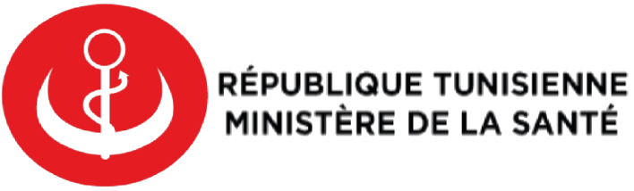

<nav class="navbar navbar-expand-lg navbar-dark bg-dark">
    <div class="container d-flex justify-content-between">
        <div>
            <a [routerLink]="['/']" routerLinkActive="router-link-active">
            </a>
        </div>
        

        <div class="mr-0">
            <button class="navbar-toggler" type="button" data-toggle="collapse" data-target="#navbarSupportedContent"
                aria-controls="navbarSupportedContent" aria-expanded="false" aria-label="Toggle navigation">
                <span class="navbar-toggler-icon"></span>
            </button>
            <div class="collapse navbar-collapse" id="navbarSupportedContent">
                <ul class="navbar-nav mr-auto">
                    <li class="nav-item active">
                        <a class="btn btn-danger" [routerLink]="['me']" role="button" aria-pressed="true">Espace Citoyen</a>
                        <a class="btn btn-danger" [routerLink]="['/me/appointment']" role="button" aria-pressed="true">Consulter Réservations</a>


                    </li>
                </ul>
            </div>
        </div>
    </div>
</nav>
<div class="container">
    <router-outlet></router-outlet>
</div>
<footer class="text-center p-3 position-fixed w-100 bg-opacity-100 bg-light bottom-0">
    Tout droit réservé © Mohamed Ben Attia - Khalil Ouertani
    
</footer>